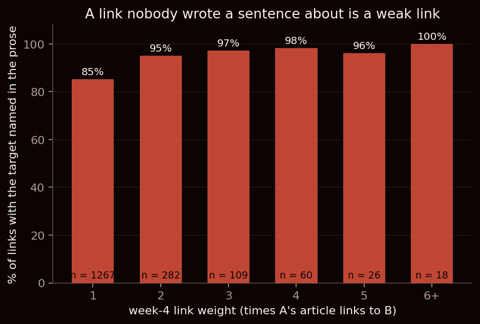
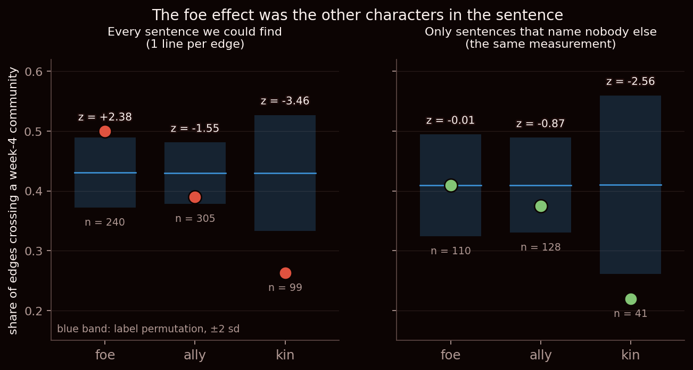
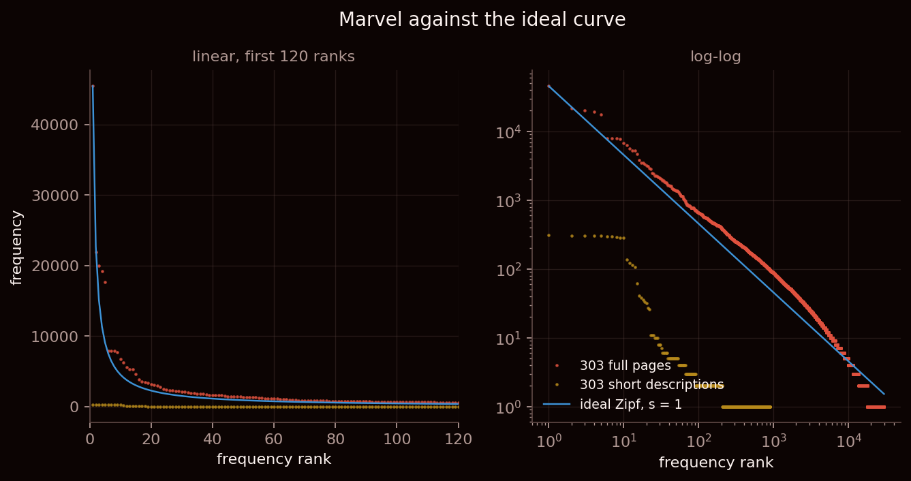

What we asked
For four weeks this network has been a set of arrows. An arrow from Spider-Man to Venom means Spider-Man's Wikipedia article links to Venom's, and that is the entire content of it — the arrow does not say whether they are enemies, teammates, or father and son.
This week we got the text. Every one of the 303 characters comes with their full Wikipedia article, and somewhere in Spider-Man's article there is a sentence that mentions Venom. So the question almost writes itself: the network says A and B are connected, and A's page says why — can we just read the relationship off the prose?
And if we can, there is an obvious thing to do with it. Last week we split this network into communities: an X-Men cluster, a Spider-Man cluster, a cosmic tier, a street-level New York group. Those are the groups the links fall into. So: do the enemies sit in different groups? It would be a satisfying thing to be true. Your friends are in your corner of the universe and your nemesis is somewhere else.
We got an answer. We are fairly sure it is not the answer.
First: a tenth of the network isn't written down
Before labelling anything we had to find, for each link, the sentence it came from. Take the source character's article, search it for the target's name, keep the sentence around the first hit. Straightforward, and it worked for 1,555 of the 1,762 links.
The other 207 — 11.7% of the network — have no sentence, because the target is not named anywhere on the source's page. Not under a nickname, not as a substring, not once.
Take Anne Weying, who links to Deadpool. Her article is 4,488 characters long and the string "Deadpool" does not occur in it. The link is real: week 1 built the network from the rendered HTML, and there genuinely was a link there. It was in a navigation box at the bottom of the page — one of those grids of related characters that Wikipedia staples to an article — and this week's plain-text release strips exactly that furniture out.
So an eleventh of our network is links that nobody wrote a sentence about. That sounded like it might just be noise, until we crossed it with week 4's link weights, which count how many times one article links to another:

It climbs almost perfectly: 85% at weight 1, and 100% at weight 6 or more. A link with no sentence behind it is a link that was only ever made once, in a template. The text is not missing information about the network so much as telling us which parts of the network were an editorial afterthought — and that is worth knowing before anybody builds anything on top of those arrows.
The method the exercise suggests
For the 1,555 links that do have a sentence, we did the obvious thing. Three small word lists:
foe: enemy, foe, nemesis, villain, rival, battle, fight, defeat, kill, murder, attack, destroy, revenge, clash.
ally: ally, allies, friend, team, join, member, partner, aid, help, rescue, save, recruit.
kin: married, wife, husband, son, daughter, brother, sister, father, mother, cousin, uncle, aunt, twin.
If the sentence contains a word from exactly one list, the link gets that label. If it hits two lists, we throw it out rather than guess — that cost us 208 links. The result: 240 foes, 305 allies, 99 family, and 703 sentences with nothing we could label.
Then the week-4 question. Across all the labelled links, 43.0% connect two characters in different communities. Does that depend on the label?
It does, and beautifully. Foes cross a community boundary 50.0% of the time. Allies, 39.0%. Family, 26.3%. Perfectly ordered, exactly as the story would have it.
And it is not an artefact of the network's shape, because we checked it the way we have checked everything since week 2. We shuffled the labels across the links ten thousand times — keeping the network, the communities, and the exact number of each label, and breaking only which link carries which label — and asked how often chance produces a gap that big.
Rarely. Foes land 2.4 standard deviations above the shuffled mean (p = 0.020), family 3.5 below (p = 0.0007). We had a result.
Then we read the sentences
The course page has a line about this that we would like to have taken more seriously before getting excited: whatever you claim, inspect the text underneath it before you believe it. So we pulled a random sample of the labelled sentences and read them one by one, asking a simple question: is the relationship this word describes actually between these two characters?
Mostly, no. Out of 62 sentences we read by hand, 23 were right. 37%.
And the failure is not random. Here is what it actually looks like:
Ursa Major → War Machine, labelled foe:
"Ursa Major returns as part of the Winter Guard, helping them and War Machine fight off a Skrull attempt to steal Russian nuclear bombs."
Dargo Ktor → Hercules, labelled foe:
"Aided by Hercules, Thaddeus Stark, and Deva Van Dyne, they reassembled the Avengers … and fight for good."
Wolverine → Cable, labelled kin:
"Cable's son Genesis kidnaps Wolverine and attempts to re-bond adamantium to his skeleton."
Blade → Spitfire, labelled ally:
"He soon afterwards stakes his new teammate, the vampire hero Spitfire."
The word is in the sentence. The fight is somebody else's. Marvel plot summaries name three or four characters per sentence, and the conflict word almost always belongs to a different pair than the one our link connects. Ursa Major and War Machine are on the same side, shooting at Skrulls. Cable's son is Genesis, not Wolverine.
That is worse than noise, because it is not symmetric. Of the 22 foe-labelled sentences we read, seven described the two characters fighting side by side. The foe bucket is not "enemies plus some junk" — it is roughly a third real enemies, a third real allies, and a third irrelevant.
What's left
If the problem is other characters crowding into the sentence, there is a blunt test for it. Throw away every sentence that names anybody else from the roster, keep only the ones about these two and nobody more, and run the identical measurement. That leaves 654 of the 1,555 — 42%.

The foe effect is gone. Not weakened — gone. It lands at 0.409 against a shuffled mean of 0.409: z = −0.01, p = 1.00. The cleanest null result we have ever produced. The finding we nearly published was the other characters standing in the sentence.
The family effect survives. On the pair-only sentences it is 0.220 against 0.411, z = −2.56, p = 0.013 — in effect size, slightly stronger than before. Family really does stay inside its community, and that one we believe, with the caveat that it now rests on 41 links.
Why does one survive and the other not, when we read both at around 45% correct? Because of what the errors do. The kin mistakes are mostly about somebody else's brother — random with respect to community boundaries, so they dilute a real effect toward the baseline without reversing it. The foe mistakes point the other way. Mixing enemies and allies in one bucket is not adding noise to a signal, it is averaging a signal with its own negation.
What surprised us
That the shuffle test passed. We have leaned on permutation nulls since week 2 and they have been the thing that kept us honest — they caught the free half of modularity last week. Here the null did its job perfectly and was no protection at all, because it was testing the wrong thing. It asked whether the labels were associated with the boundaries. They were. It had no way to ask whether the labels meant what we said they meant.
A null model validates a measurement against chance. It cannot validate a measurement against the world. The only thing that did that was reading sixty-two sentences, which took about forty minutes and cost us our result.
Caveats
- The labels are 37% correct on a hand-read sample of 62, and we read them ourselves, knowing what we hoped to find. A second reader would be the obvious fix and we did not have one.
- We take one sentence per link, the first mention only. A page that mentions a character five times contributes one of them, picked by position, not by informativeness.
- Direction is thrown away. A kills B and B kills A both come out as
foe. - The 654 pair-only sentences are not a random subset of the 1,555. Short sentences naming exactly two characters skew toward opening lines and list-like text, so we have traded the crowding problem for a length-and-section problem. The family result survives the restriction; we have not shown it survives that.
- The surviving result rests on 41 links. That is the smallest number this post leans on, and it is not comfortable.
- Week 4's communities are one run of an algorithm that agrees with itself about 70% of the time. Every crossing rate here moves if the seed does, and we did not propagate that.
- 303 characters from one Wikipedia category. As always, this is a finding about how Wikipedia is written at least as much as about Marvel.
The corpus underneath it
Everything above rides on one preprocessing choice, so here it is, with the counts it produces. Words only, lowercased, no digits or punctuation, hyphens kept inside a token so spider-man survives as one word: 690,709 tokens, 29,737 distinct types, and 11,769 types that occur exactly once — 40% of the vocabulary appearing a single time.
The ten most frequent words are the, and, of, to, in, as, is, by, his, with. Not one of them is about superheroes. Remove the stopwords and the top becomes marvel, character, new, appears, series — which is the language of encyclopedia-writing, not of heroism. Both lists are worth keeping in mind next time someone reports what a corpus is "about" from a frequency table.

Fitted over ranks 10 to 1,000, the full pages give a slope of 0.90 and the short descriptions 1.02 — both near the textbook 1, and the full corpus visibly straighter over more decades. We will say it is Zipf-like and stop there. A straight-ish line on log-log axes is consistent with a power law and does not establish one; a lognormal looks the same by eye over this range, and the tail's apparent straightness is partly an artefact of plotting rank against a staircase of ties at 1 and 2. Our own two slopes differ by 0.12 on corpora from the same source, which is reason enough not to read much into either.
Reproduce it
Data: this week's marvel_pages.zip, the week-1 edges, and week 4's communities read straight back out of the chart data so the two posts cannot disagree.
cd "Week5 Lecture/Homework"
python pages.py # corpus summary, checked against the roster
python analysis_week5.py # everything, 10,000 label permutations
python analysis_week5.py --fast # 1,000, for iterating
python analysis_week5.py --sample # dump the sentences, for reading by handBuilt with spaCy, tiktoken, NLTK, scikit-learn, NumPy and Matplotlib. Two implementation notes worth passing on. The filenames inside the zip are URL-encoded, and exactly one character is affected — Mark_Hazzard%3A_Merc — which is what makes it dangerous: a naive join returns 302 of 303 articles and looks like it worked. And our own surface-name matcher sorted a character's aliases by length alone, leaving ties to be broken by Python's set iteration order, which is randomised per process; two runs of the same script disagreed about how many foes there were until we sorted on length and spelling. Every number above comes from the deterministic version.
The full workings, including the answers to this week's other exercises and the sixty-two sentences we read, are in week5_typed_notes.md in the repo.